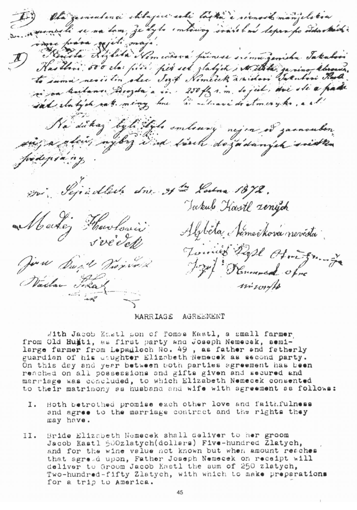

The book · The Family of Jacob Kastl
Page 45


Transcription

MARRIAGE AGREEMENT
With Jacob Kastl son of Tomas[?] Kastl, a small farmer from Old Hutti[?], as first party and Joseph Nemecek, semi-large farmer from Lepadloch No. 49 , as father and fatherly guardian of his daughter Elizabeth Nemecek as second party. On this day and year between both parties agreement has been reached on all possessions and gifts given and secured and marriage was concluded, to which Elizabeth Nemecek consented to their matrimony as husband and wife with agreement as follows:
I. Both betrothed promise each other love and faithfulness and agree to the marriage contract and the rights they may have.
II. Bride Elizabeth Nemecek shall deliver to her groom Jacob Kastl 500zlatych(dollars) Five-hundred Zlatych, and for the wine value not known but when amount reaches that agreed upon, Father Joseph Nemecek on receipt will deliver to Groom Jacob Kastl the sum of 250 zlatych, Two-hundred-fifty Zlatych, with which to make preparations for a trip to America.
Transcriber’s notes
Upper ~60% is the continuation of the handwritten Czech marriage contract (image s047-ph1); lower part is a typewritten English translation headed 'MARRIAGE AGREEMENT', reproduced in typewriter face, which continues on the next page. Typewriter text is faint/smudged: 'Tomas' (possibly 'Tomsa'/'Tomss') and 'Old Hutti' (third letter overstruck) are uncertain; 'Lepadloch' (vs. 'Lepadlech' elsewhere) and '500zlatych(dollars)' transcribed as typed. Tentative, uncertain reading of the handwritten date/signatures: 'v Lepadlech dne 31ho Ledna 1872.' — 'Jakub Kastl ženich', 'Alžběta Němečková nevěsta', 'Tomáš Kastl otec ženicha', 'Josef Němeček otec nevěsty'; witnesses at left: 'Matěj Havlovic[?] svědek', 'Josef[?] Kastl[?] ...', 'Václav ...'.